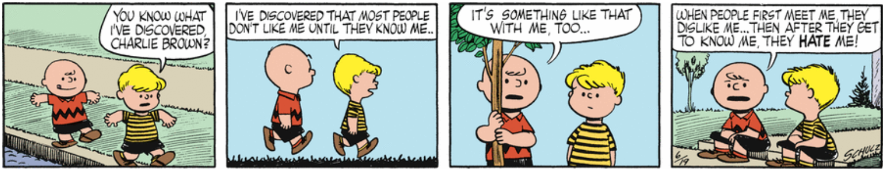
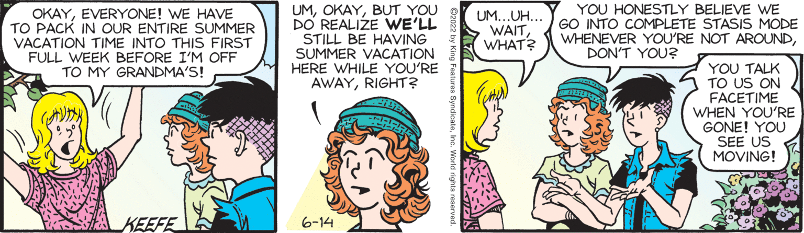
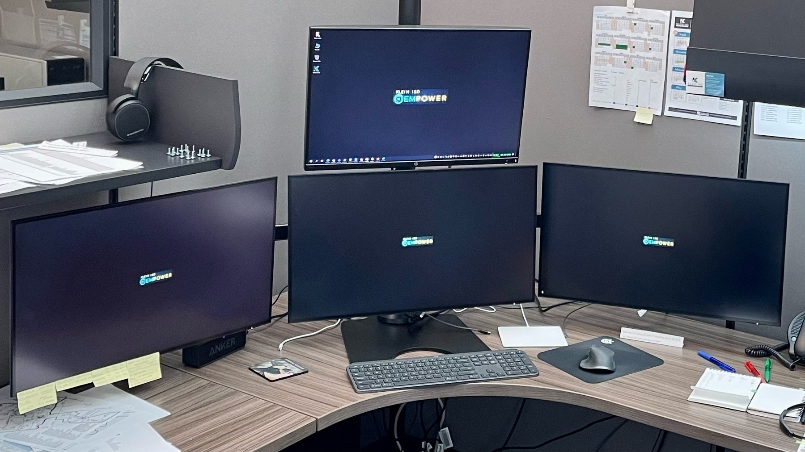

In the interest of going big or going home, the B1G needs to totally gut the Pac 12 and get Stanford & Oregon along with USC & UCLA. Then the rest of the (former) Pac 12 scrubs can give into the inevitable and merge into the Big 12, to form a Group of 5 “superpower” conference.
And if they want to really do something interesting, then grab Iowa State & Kansas from the Big 12 to bring the B1G to a nice even 20 members.
Nothing Has Been Outlawed
Key quote from the Dobbs ruling:
“The Constitution does not confer a right to abortion,” wrote Alito. “Roe and Casey are overruled; and the authority to regulate abortion is returned to the people and their elected representatives.”
As with Dred Scott, Roe & Casey were bad law, and striking them down is entirely justified.
This is not, as some now (and will continue to) contend in the hyperbolic sturm und drang, anti-democratic an/or the “death of democracy”; rather, it is a sign that democracy is alive and well.
Nothing has been outlawed. An issue has been returned to the democratic process, whereby the people and their representatives can manage it via the legislative process. Different states can, and will, have different laws governing this issue. #muchdemocracy
That one side now reacts with threats and violence belies the fact that they never wanted it to be “democratic”; rather, their fear of not being able to carry the day democratically is driving the impulses to improperly frame the issue, and to use intimidation to try and get their way.
Thank God for this court and this decision. While murder on this scale (60 million+ over 50 years) should not be condoned or legal, at least this decision returns it to a Constitutionally proper context.
It’s really no wonder that Peanuts/Charlie Brown spoke to me in such a deep way – given Schulz’s world view, it was inevitable that I would find Peanuts and love it…

I totally get this idea/vibe… Quite often I realize that I’m interpreting the world in such a way as to almost think of everyone else as NPCs.
https://comicskingdom.com/sally-forth/2022-06-14

New monitor stack at work!
Replaced a 2x2 tree with this, and I already like it so much more.
Bottom three are 4K & the top is a regular 1920x1200 (1-2K?).
Many thanks to my boss for granting the “new guy” request for the 4K displays & the new 1x3 tree.
(It’d be even better if it was all driven by a Mac, but you can’t get everything…)

The top two-song combo from the same artist evoking what it felt like to have been in high school and college in the ‘80s –> Shout & Everybody Wants to Rule the World by Tears for Fears.
Tack on Head Over Heels, and you have an unbeatable trio…


Writing is not easy. Opening oneself up is scary, even if (when) it’s done out of a need to vent. More thoughtful writing is, alas, even more difficult because it brings with it introspection. That said, even as there is a part of me that resists being that open, I feel compelled to write. Perhaps it will serve as needed therapy. Perhaps it will be silly and self-indulgent. But, hopefully, it will be internally beneficial and externally (i.e., for the readers) tolerable.
We’ll see…